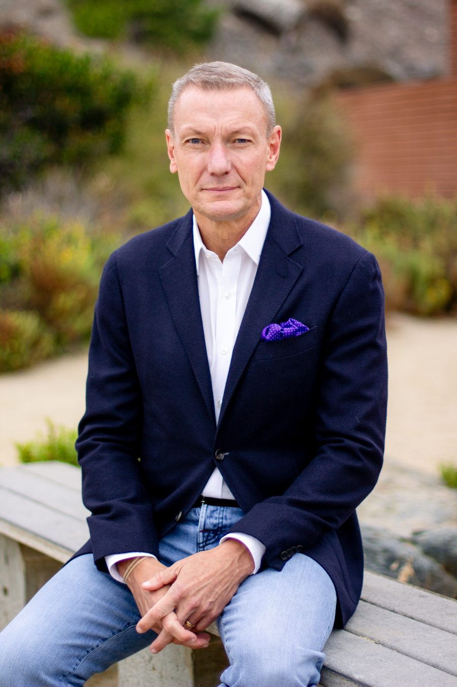
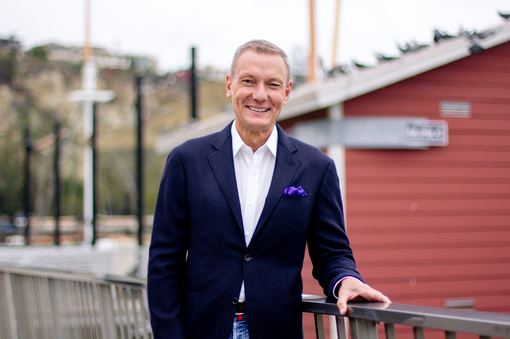

Proven, steady leadership for Dana Point — keeping our neighborhoods safe, our growth responsible, and our coastal community affordable and vibrant for generations to come.

From the Marine Corps to Dana Point City Hall, John Gabbard has spent his life leading with duty, integrity, and a deep commitment to the people he serves.

John Gabbard is the elected Mayor of Dana Point and a longtime community leader whose career spans distinguished military service, executive leadership in homebuilding, and hands-on civic engagement across our neighborhoods, faith communities, and veteran organizations.
A Marine Corps veteran of 17 years, John served as both an enlisted Marine and an officer, deploying on multiple operations worldwide. After his service he built a career in housing and real estate, helping develop more than 15,000 homes across Southern California — bringing practical expertise in land use and forward planning to his public service.
Elected to the City Council in 2022 representing District 1 and appointed Mayor for 2026, John is focused on public safety, responsible growth, affordability, and protecting the quality of life that makes Dana Point special. He and his wife Renee have called Dana Point home since 2005.
The values guiding John's work on the City Council — practical priorities focused on the things that matter most to our community.
Strengthening law enforcement presence, improving emergency preparedness, and ensuring that neighborhoods, parks, and coastal areas remain safe for residents and visitors.
Protecting water quality, enhancing maintenance of public spaces, and preserving the natural environment that defines Dana Point's identity and economy.
Standing up for Dana Point's right to make its own safety and land use decisions, pushing back against state overreach, and ensuring community voices are heard in policies that affect the city's future.
Fighting to keep Dana Point livable and affordable for working families, seniors, and the next generation of residents.
Grassroots support powers this campaign. Your contribution helps us reach every voter in Dana Point and keep proven leadership working for our community.
Donate Now →Paid for by John Gabbard for Dana Point City Council 2026.
Questions, ideas, or want to get involved? We'd love to hear from you.